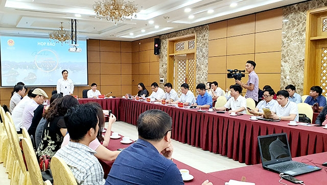

Vịnh Hạ Long
NDĐT - Chiều 12-5, UBND tỉnh Quảng Ninh tổ chức họp báo về chương trình “Nghệ thuật chào hè Hạ Long - Quảng Ninh 2020”, sự kiện mở đầu chuỗi hoạt động về kích cầu du lịch của tỉnh.
NDĐT - Chiều 12-5, UBND tỉnh Quảng Ninh tổ chức họp báo về chương trình “Nghệ thuật chào hè Hạ Long - Quảng Ninh 2020”, sự kiện mở đầu chuỗi hoạt động về kích cầu du lịch của tỉnh
Theo đó, chương trình “Nghệ thuật chào hè Hạ Long - Quảng Ninh 2020” sẽ được tổ chức vào 20 giờ ngày 16-5 tại Trung tâm Hội nghị quốc tế FLC Hạ Long; Chương trình dự kiến có quy mô khoảng 700 đến 800 người, với sự tham dự của các đơn vị, doanh nghiệp kinh doanh dịch vụ, du lịch trên địa bàn tỉnh Quảng Ninh, nhân dân và du khách. Chương trình gồm hai phần, phần nghi lễ và phần nghệ thuật, với tổng thời lượng 90 phút, trong đó nội dung trọng tâm là chương trình nghệ thuật dài 75 phút. Chương trình nghệ thuật gồm ba chương là Vào Hạ, Sắc màu phố biển Hạ Long và Hạ Long vẫy gọi với các bài hát mang đậm sắc thái Hạ Long - Quảng Ninh. Để bảo đảm an toàn, tỉnh Quảng Ninh đã chỉ đạo ngành Y tế bố trí nhân viên và các thiết bị, vật tư y tế để bảo đảm đúng quy trình, quy định đối với việc tổ chức sự kiện đông người. Toàn bộ khách vào khu vực tổ chức chương trình sẽ được kiểm soát thân nhiệt bằng máy quét tự động. Đây là sự kiện mở màn cho chuỗi các sự kiện văn hóa, thể thao, du lịch nhằm kích cầu du lịch Hạ Long, Quảng Ninh, tạo động lực và bước đột phá cho phát triển du lịch trong điều kiện dịch bệnh Covid-19 đã cơ bản được kiểm soát tốt. Phát biểu tại buổi họp báo, ông Đặng Huy Hậu, Phó Chủ tịch UBND tỉnh Quảng Ninh nhấn mạnh: Cùng với cả nước, tỉnh Quảng Ninh đã chuyển sang một giai đoạn phòng, chống dịch mới dài hơi hơn, căn cơ hơn cùng với phát triển kinh tế - xã hội, tập trung triển khai đồng bộ, quyết liệt các giải pháp thiết lập trạng thái bình thường mới nhằm vừa kiểm soát tốt dịch bệnh Covid-19, vừa khẩn trương phục hồi phát triển kinh tế. Trong đó ngành du lịch, dịch vụ là lĩnh vực tiên phong phải nhanh chóng lấy lại đà tăng trưởng . Theo đó, Quảng Ninh chính thức triển khai chương trình kích cầu du lịch với hàng loạt các giải pháp mạnh, với sự vào cuộc đồng bộ của cộng đồng doanh nghiệp, người dân và các cấp chính quyền. Giám đốc Sở Du lịch Quảng Ninh Phạm Ngọc Thủy cho biết: Sau Chương trình nghệ thuật Chào hè Hạ Long - Quảng Ninh 2020, tại thành phố Cẩm Phả sẽ diễn ra Lễ khánh thành và đưa vào khai thác khu nghỉ dưỡng khoáng nóng Quang Hanh; tại huyện Cô Tô sẽ có các sự kiện chào đón du lịch hè Cô Tô năm 2020; tại thành phố Móng Cái là Lễ hội ẩm thực. Để kích cầu du lịch, tới đây tại kỳ họp HĐND tỉnh Quảng Ninh sẽ xem xét thông qua chủ trương miễn, tặng phí vào các điểm tham quan: vịnh Hạ Long, Bảo tàng Quảng Ninh (thành phố Hạ Long), Khu di tích và danh thắng Yên Tử (thành phố Uông Bí). Theo đó, dự kiến miễn 100% phí trong tháng 5-2020 và các ngày: ngày 1-6; ngày 28-6 (Ngày Gia đình Việt Nam); ngày 9-7 (Ngày Du lịch Việt Nam); ngày 27-7 (Ngày Thương binh, Liệt sĩ). Áp dụng chính sách mua một vé, tặng một vé tham quan cho du khách tại vịnh Hạ Long (không áp dụng cho vé ngủ đêm), Bảo tàng Quảng Ninh, Khu di tích danh thắng Yên Tử trong các ngày còn lại của tháng 6 và 7-2020. Hỗ trợ 100% chi phí hoạt động khai thác vận tải công cộng bằng xe buýt chất lượng cao từ Cảng hàng không quốc tế Vân Đồn đến Dốc Đỏ (phường Phương Đông, thành phố Uông Bí) và ngược lại. Sở Du lịch Quảng Ninh cũng đang đứng ra liên kết các doanh nghiệp trong lĩnh vực dịch vụ, lữ hành ngành du lịch cùng tham gia chương trình kích cầu, hình thành liên minh kích cầu du lịch tỉnh Quảng Ninh. Đồng thời, có kế hoạch tổ chức các chương trình kích cầu du lịch nội địa tại Nha Trang, Đà Nẵng, Đắc lắc vào đầu tháng 6-2020. Căn cứ diễn biến tình hình thực tế, sẽ có thể triển khai ngay việc xúc tiến đến các thị trường quốc tế (Trung Quốc, Đông - Bắc Á, ASEAN...) trong năm 2020.